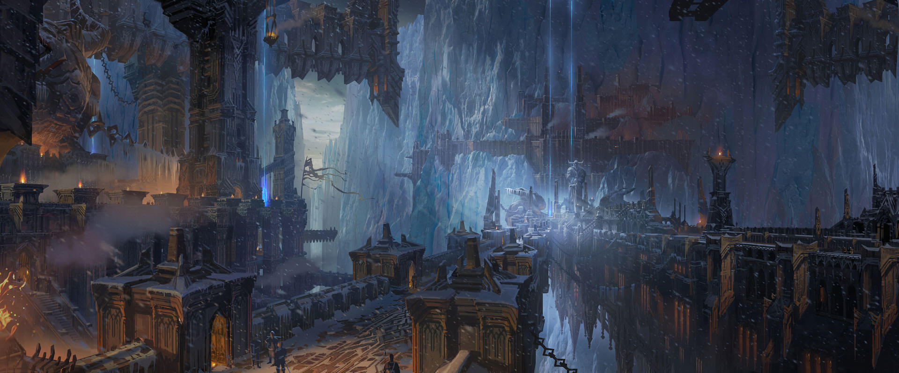
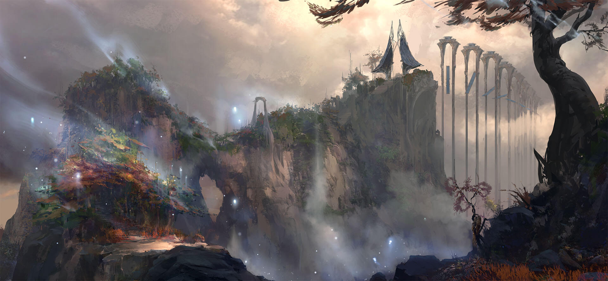
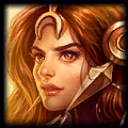

RUNATERRA
Escucha, viajero: Runaterra nació cuando los dragones primigenios prendieron chispa al vacío y sembraron montañas, ríos y magia viva.
Durante eones los mortales vivieron en tribus, hasta que descubrieron las runas que latían bajo la tierra;
al pelear por ellas sacudieron el cielo y partieron continentes en la devastadora Guerra Rúnica.
De aquellas cenizas brotaron reinos tan distintos como Demacia, que alzó murallas de piedra para contener la brujería; Noxus, que hizo de la conquista un credo;
la brillante Piltover y la humeante Zaun, hermanas unidas por la ciencia hextech; el desierto solar de Shurima, antaño imperio dorado; y el Monte Targón, donde algunos mortales se funden con constelaciones.
No todas las heridas sanaron: una catástrofe llamada la Ruina envolvió islas enteras en niebla eterna, y la sombra acecha los litorales.
Sin embargo, allí donde surge la oscuridad también despiertan héroes: arqueras de hielo, bailarinas de hojas, generales demoníacos y pistoleras desquiciadas escriben nuevas gestas.
Así continúa la crónica interminable de Runaterra, un mundo donde los dioses adoptan rostro humano y los humanos sueñan con tocar la divinidad.
MAPA
SUS REGIONES
FRELJORD
Freljord es una región fría e inmisericorde donde los semidioses campan a sus anchas y las personas nacen guerreras.Aunque hay muchas tribus individuales, las tres más grandes son los avarosanos, la Garra Invernal y la Guardia de Hielo, todas movidas por su afán de supervivencia.
Además, es el único sitio de Runaterra en el que se puede hallar Hielo Puro
Ashe: Arquea de la tribu Avarosana, intenta unir a Freljord en un solo reino
Sejuani: Jefa de los Diente de Hielo, cree que solo la guerra templará a su pueblo.
CAPITAL
La Ciudadela de la Guardia de Hielo

DEMACIA
Demacia es un reino orgulloso y honesto con un prestigioso historial militar. Fundado con el propósito de servir de refugio frente a la magia tras las Guerras Rúnicas,hay quien cree que la edad de oro de Demacia terminará si no logra adaptarse al nuevo mundo. Su sociedad, autosuficiente y agraria, es de naturaleza defensiva y aislada,
y valora la justicia, el honor y el deber por encima de todas las cosas.
Garen Crownguard: Caballero del Destino; encarna la justicia y la defensa de la corona.
Luxanna Crownguard: Hermana menor de Garen; maga luminosa que oculta su poder en una tierra que desconfía de los hechiceros.
CAPITAL
GRAN CIUDAD DE DEMACIA

NOXUS
Noxus es un salvaje imperio cuya expansión no se detiene. Eso sí, quienes miren más allá de su exterior militarizado descubrirán una sociedad sorprendentemente inclusiva.Todo el mundo puede aspirar a una posición de respeto y poder si demuestra que tiene las aptitudes necesarias, sin importar su estatus social, su pasado o su riqueza.
Los noxianos valoran la fuerza por encima de todo lo demás, aunque la fuerza se puede manifestar de modos muy distintos.
Darius: Mano de Noxus; general implacable que personifica la conquista.
Swain: Gran general visionario con magia demoníaca, mueve los hilos políticos del imperio.
CAPITAL
EL BASTIÓN INMORTAL
JONIA
Jonia, conocida como las Tierras Primigenias, es un continente insular de gran belleza y magia naturales. Sus habitantes, que viven en provincias ligeramente aglutinadas,son gente espiritual en busca de la armonía con el mundo. Fueron esencialmente neutrales hasta que Noxus invadió su territorio. Ante esa brutal ocupación,
Jonia se vio forzada a reevaluar su posición en el mundo, y la dirección que tomará ahora está todavía por determinar.
Irelia: Danza con hojas levitantes; lidera la resistencia jonia.
Yasuo: Espadachín exiliado que manipula el viento, busca redención por un crimen que no cometió.
CAPITAL
EL PLACIDIUM DE NAVORI

PILTOVER & ZAUN
Piltover es una próspera ciudad progresista frente al océano. Acoge a flotas enteras de barcos mercantiles que cruzan las gigantes puertas marítimas para traer bienes provenientes del resto del mundo.Los clanes mercantiles aportan los fondos necesarios para empresas increíbles: desde locuras artísticas a monumentos arquitectónicos en honor a su poder individual.
Con cada vez más inventores indagando en la hextech, Piltover se ha convertido en el destino para los artesanos más habilidosos de toda Runaterra.
Zaun es una ciudad subterránea contaminada que se encuentra debajo de Piltover. Aunque tiempo atrás fueron una sola, ahora son dos culturas simbióticas separadas.
Las investigaciones poco ortodoxas de los inventores reprimidos a menudo son bien recibidas en Zaun, pero las imprudencias de la industria han hecho que varias
partes de la ciudad sean extremadamente tóxicas.Sin embargo, gracias a un boyante mercado negro, la tecnoquímica y los aumentos mecánicos, sus residentes disponen de recursos para seguir prosperando.
Caitlyn: Sheriff de Piltover con rifle hextech y aguda mente investigadora.
Jinx: Criminal zaunita impredecible, símbolo del caos que surge de los bajos fondos.
TARGON
Targon, una región montañosa y de escasa población al oeste de Shurima, presume de tener el pico más alto de Runaterra. Lejos de la civilización, la ubicación del monte Targon es prácticamente imposible deencontrar para todos salvo para los peregrinos con más determinación, que ansían con toda su alma alcanzar la cima. Los poquísimos que sobreviven al ascenso vuelven atormentados y vacíos,
o experimentan un cambio que los vuelve irreconocibles.
Leona: Aspecto del Sol, guerrera que canaliza la luz estelar. 
Pantheon (Atreus): Portador del Aspecto de la Guerra rebautizado, lucha por el valor humano contra deidades indiferentes.
CAPITAL
EL MONTE TARGÓN
SHURIMA
Shurima, otrora una próspera civilización que recubría el continente meridional, quedó en ruinas con la caída de su dios-emperador. Con el paso de los milenios,los cuentos de su antigua gloria se tornaron en mito y ritual.Ahora sus habitantes nómadas se buscan la vida en los desiertos o terminan trabajando como mercenarios.
Aun así, algunos todavía se atreven a soñar con el regreso de aquellos tiempos.
Azir: Emperador Ascendido que alza su imperio de las arenas.
Sivir: Mercenaria y portadora de un arma ancestral, descifra secretos que podrían decidir el destino de Shurima.
CAPITAL
EL DISCO SOLAR
IXTAL
Recluida en lo más profundo de la selva al este de Shurima, la sofisticada ciudad arcológica de Ixaocan sigue a día de hoy libre de toda influencia del mundo exterior.Los ciudadanos de Ixtal han presenciado desde su refugio la ruina de las Islas Bendecidas y la evolución de la cultura Buhru, y consideran que el resto de las facciones de Runaterra
no están en absoluto a la altura de su grandeza. Su poderosa magia elemental los ayuda a mantener a raya a los intrusos.
Qiyana: Autoproclamada Emperatriz de los Elementos, domina la geomancia.
Neeko: Cambiaformas vastaya que percibe emociones y se integra curiosamente en otras culturas.
CAPITAL
IXAOCAN

AGUAS ESTANCADAS
Aguas Estancadas es una ciudad portuaria muy particular: hogar de cazadores de monstruos, bandas portuarias, pueblos indígenas y comerciantes de todas partes del mundo.No hay prácticamente nada que no se pueda comprar aquí, desde hextech ilegal hasta el favor de los amos del crimen locales. Es el mejor sitio en el que buscar fama y fortuna,
si bien la muerte acecha en cada callejón y la ley brilla por su ausencia.
Miss Fortune: Capitána corsaria que gobierna los muelles con pistolas gemelas.
Illaoi: Profetisa del dios Kraken, desafía a los mortales a probar su espíritu.
CAPITAL
BAHIA DE AGUAS ESTANCADAS

ISLAS DE LAS SOMBRAS
Las Islas de la Sombra fueron antaño un hermoso reino, pero eso fue antes de que un cataclismo mágico las asolara. Ahora la Niebla Negra cubre permanentemente la tierra,que ha sido mancillada y corrompida por su encantamiento maléfico. Los que perecen dentro sufren la condena de formar parte de ella para toda la eternidad… y lo que es peor,
cada año la Niebla se extiende para absorber más almas en Runaterra.
Thresh: Carcelero espectral que colecciona almas atormentadas.
Gwen: Muñeca encantada por magia sagrada, busca purificar el desastre causado por la Ruina.
CAPITAL